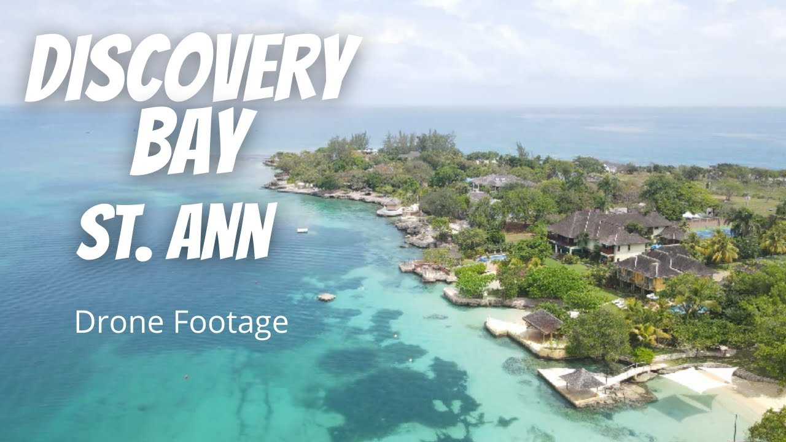

Bio
Hello, My name is Mikha'la Campbell . I am currently 18 years old.
I was born in the beautiful island of Jamaica.
I moved to the United States when I was 14 years old, the very beginning of my high shcool career.
Strangely enough, adjusting was not a challenge, all credit due to my exposure to American media. Therefore, my transition was pretty smooth.
I am currently high school senior participating as an Early College Student at New England Institute of Technology.
Go Tigers!


Schooling
-
Kingergarten & Primary: I attended The Glen Preparatory School for k1-k3 and from 1st to 6th grade. After which I graduated to attend high school.
(Things are done slightly different in Jamaica)
-
High School Part 1: After prep school, I took the national testing PEP and I was placed at the St. Hilda's Dioceasan High School for girls at the height of Covid.
This was one of the top schools in Jamaica at the time.
-
High School Part 2: When I moved to the US in 2022, I began high school at Charles E Shea High School in "The Bucket", formally known as Pawtucket, Rhode Island.
-
Early College: My senior year of high school, I made the decision to start college early at NEIT see if my major was right for me.
-
Summer Programs: I am apart of the TRIO Upward Bound Program gives us the opportunity to live at RIC for 6 weeks during the summer
to take classes to prepare us for the incoming school year.
Also, I participated in Brown Pre-College I got my first introduction to Computer Science and I was given the opportunity to also live on the campus.